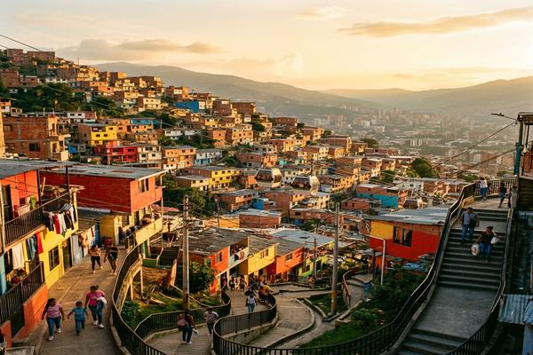
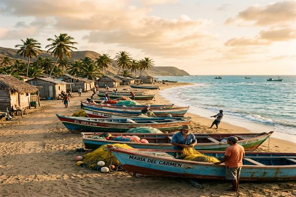
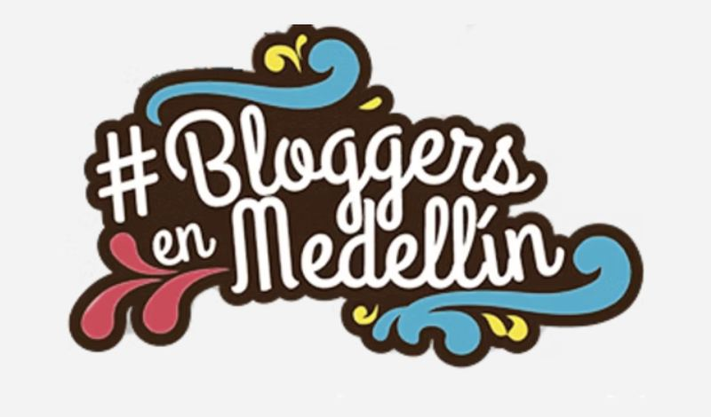

Strategic communicator, cultural manager and creator. I work where knowledge needs shape, thought needs structure and stories need a body.
Strategic communicator, cultural manager and creator. I work where knowledge needs shape, thought needs structure and stories need a body.

Strategic communicator, cultural manager and creator with over ten years at the intersection of institutions, communities and artistic practices. I lead communications at the Alejandro Ángel Escobar Foundation; previously I was digital communicator at MAMM, produced cultural events with international artists and designed positioning strategies for scientific and philanthropic organizations
Between 2018 and 2023 I lived in East Africa: Uganda, Kenya and Tanzania. I taught Spanish, did fieldwork in solar energy, supported educational communities and developed a self-taught creative practice. Those years explain why I can operate rigorously in uncertain contexts, with diverse audiences, limited resources and tight deadlines
Today, from Bogotá, I combine that journey with an artistic practice centered on handmade paper, collage, artist books and memory documentation. In both cases the question is the same: what structure makes visible what matters? I work with organizations, executives, artists and people who need clarity. Few at a time, with deep attention to each one
See artistic portfolio →Asante sana is Swahili. It means thank you very much. I learned it in East Africa. There I understood that gratitude is not a gesture of courtesy: it is a form of sustained attention.
That principle runs through everything I do: institutional and artistic work, community and individual processes, strategy documents and handmade books.
What an organization does deserves to be communicated with the same precision with which it does it.
Many organizations have decades of work without their own narrative. That has a solution.
I design processes where knowledge is not transmitted: it is built, and ends up in something you can touch.
It is not therapy or coaching. It is real creative work, with someone who also creates.
Paper, collage and artist books are not the result of the process. They are the method.
Official archives keep what was decided to preserve. I am interested in the rest.
Fundación Alejandro Ángel Escobar
Content and communications lead
I work on structuring and implementing the Foundation's institutional communications. The process has involved organizing complex information: research, trajectories and programs, and translating it into a clear narrative for different audiences: media, allies in the scientific and cultural sectors, and the general public. This work has strengthened the positioning of awards and consolidated relationships with key stakeholders.
Museo de Arte Moderno de Medellín (MAMM)
Digital strategy and curatorial process coordination
I designed the museum's digital strategy and developed editorial content for its platforms. Later, I participated in producing a discursive event within an exhibition, coordinating artists, curators and internal and external teams. The process connected content, programming and audiences, understanding communication as part of the cultural experience.
África del Este (Uganda, Kenia, Tanzania)
Teaching and communication for social change
I designed classes and learning processes adapted to different levels, understanding teaching as a cultural translation exercise. At Mandulis Energy, I participated in community communication processes, supporting relationships with communities in northern Uganda. The work involved listening, translating and accompanying processes where communication was part of project implementation.
Volunteering
Uganda · Education and community
Sadhguru School: support in educational processes with children, accompanying learning dynamics in local contexts (6 months). Kitintale Skate Community: participation in community processes focused on education and local development (6 months).
If you want to know more or have a project in mind, write to me.

Web series with podcasts, photographs and texts about each of the neighborhoods of Medellín
Explore
Investigative journalism in northern Colombia: faces and stories from the heart of a coastal town
Explore
Theoretical analysis of the transmedia concept applied to the 3 Travel Bloggers series and public advertising on the Internet
ExploreHow I work
Each process begins with a conversation. From there I build a specific proposal: there are no standard packages because there are no standard projects.
What is constant: real listening at the beginning, clear structure during the process, and a concrete deliverable at the end.